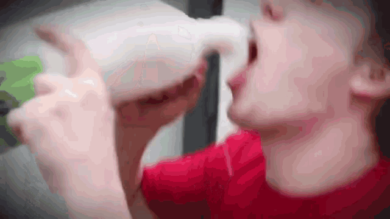

año 2067★ puto el que lo lea ★
ANARCHY FOREVER
GNU/LINUX
atentamente
karl max
GARRY'S MOD
mi segundo eterno amor
STEAM
gordito computito
Ⓐ ANTIYUTA
Y ANTITODO Ⓐ
el habitante de esta no-página
bueno,
soy Gino.
bueno me presento, me llamo Gino, tengo 18 años y soy residente de la concha de la hermana de gabi JAJAKSK DAOPFJAWIFCAWMFWEM0ÍOÍMEFR
✶ posdata: soy un femboncito de al rededor de 87 añitos☺
01 / garry's mod ▣
bueno, este seria yo en garrys mod, no me veo totalmente asi pero estaba chistoso, para más referencia estoy más gordito
02 irl ✿
bueno esta foto me la sacaron en una plaza al lado del rio, este si soy yo totalmente y bueno un saludo para Gaspi
SIGNIFICATIVAS
queria poner algo nomás

MARCELO
este para todes
YUGOSLAVIA
 antilean
antilean
con cariño
MUCHAS GRACIAS
GRACIAS AMIGOS POR SIEMPRE HACERME REIR, JUNTARSE CONMIGO Y HABLARME,
posdata: si esntraste aca es porque te enteraste, si te entereaste es porque te quiero.
✶ ♡ ☺ ♡ ✶
TEMPLO
Brandon
gracias amigo por siempre hacerme reir, querer que yo este bien, preocuparte por mi y siempre querer hacer algo, te quiere mucho tu amiguito gino.
♡ ✶ ♡ ✶ ♡
huevadas
vieron que antes ponian links a otras paginas? bueno, aca hay re basicas asi que vayan